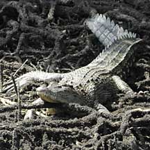
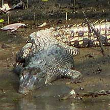
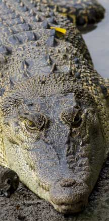
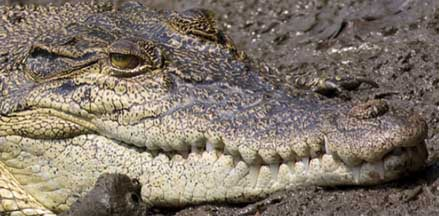

| Phylum Chordata
> Subphylum Vertebrata > Class Reptilia |
Estuarine
crocodile
Crocodylus porosus
Family Crocodylidae
updated
Apr 2018
if you
learn only 3 things about them ...
 Only healthy mangroves can support these magnificent top predators! Only healthy mangroves can support these magnificent top predators!
When a crocodile smiles (mouth wide open) it's just cooling down, not about to bite.
Crocodiles don't eat people. |
|
Where
seen? This awesome reptile is often seen at Sungei
Buloh Wetland Reserve.
According to Davison, it has been recorded in our estuaries and reservoirs
including the Singapore River, Kallang River, Sungei Seletar and Kranji
Reservoir, and Pulau Tekong. Also called the Saltwater crocodile,
it is the most widely distributed of the crocodiles and found in tropical
Asia and the Pacific. It lives in b rackish and freshwater habitats.
Features: Up to 8m long.
A large triangular head with broad and long snout and bulbous eyes
at the top of the head. There is a pair of ridges along the centre
of the snout. It uses its long muscular tail to propel itself in the
water. Younger crocodiles have oval scales that are pale yellow with
black stripes and spots on the body and tail. The adults are much
darker, with lighter tan or grey areas.
Sometimes mistaken for the Malayan water monitor lizard. The lizard's snout is short and narrow, and tail is long and slender. A crocodile has a long snout and a much thicker fatter tail.
The lizard often swims by placing its limbs against its body and undulating its long tail from side to side. The crocodile may swim in the same way as the lizard. It may also often sink into the murky water and emerge some distance away. Sometimes, all that sticks out above water are the crocodile's eyes and the tip of its long snout.
On land, a large monitor lizard can look scary and be mistaken for a crocodile! Once again, observe that the lizard has a short snout and slender tail. And the lizard has a long blue forked tongue which it regularly flicks out now and then. The crocodile doesn't have such a tongue. A crocodile on the other hand, has a long snout and jaws full of teeth! And a thick fat tail. Its scales are also much bigger.
Why does a crocodile smile? Sometimes, a crocodile might have its mouth wide open. This is how a crocodile tries to cool down on a hot day (much like the way a dog pants). It's not doing this to show aggression or to get ready to bite.
What does it eat? Juveniles eat
insects, frogs, crabs and fishes. Adults eat larger prey including
fish, birds and mammals, hunting mainly at night. They may also scavange
on carrion. Despite our worst fears, crocodiles don't eat people. Like any wild animal, crocodiles will not harm humans if they are not disturbed or threatened, and if we keep a respectful distance from them.
Crocodile babies: A mother crocodile
specially constructs a nest of vegetation in which about 80 eggs are
laid. The warmth of the decomposing vegetation incubates the eggs.
The mother fiercely guards the nest.
What to do if we see a crocodile? Admire this magnificent creature, from a distance. Like any wild animal, crocodiles will not harm humans if they are not disturbed or threatened, and if we keep a respectful distance from them.
Here's NParks's advice on what you should do to stay safe
- Stay on desinated paths, don't get into the water.
- If a crocodile is spotted on the path, stay calm and back away slowly.
- Do not approach, provoke or feed the crocodile.
|

Sungei Buloh Wetland Reserve, Feb 10

Sungei
Buloh Wetland Reserve, Sep 09
Photo shared by Teo Siyang on his
blog.

Sungei Buloh Wetland Reserve, Oct 09
Photo
shared by Brandon Chia on his
flickr. |
| Status and threats: Our Estuarine
crocodiles are listed as 'Critically Endangered' in the Red List of
threatened animals of Singapore. They are
threatened by habitat loss and human persecution. Also considered
threatened globally, although successful captive breeding has
reduced hunting pressure on wild populations. They are hunted
for their skin which is used to make leather goods such as shoes
and handbags. Their meat is also eaten. |
|

Sungei Buloh Wetland Reserve, Oct 09
Photo shared
by Brandon Chia on his
flickr.
|
| Estuarine
crocodiles on Singapore shores |
Crocodiles
recorded for Singapore
from
Wee Y.C. and Peter K. L. Ng. 1994. A First Look at Biodiversity
in Singapore.
| |
Crocodylus
porosus (Estuarine crocodile)
Crocodylus siamensis
Tomistoma schlegelii (Sunda gavial) |
|
|
Links
- Crocodylus porosus (Crocodylia: Crocodylidae) Salt-water Crocodile by Mohamed Hussain, 2012, on taxo4254.
- Is
That a Crocodile or a Monitor Lizard? by Ramakrishnan Kolandavelu
in Wetlands, a publication of the Sungei Buloh Wetland Reserve,
Vol 13 No 3, 2006.
- Estuarine
crocodile on Nick Baker's EcologyAsia website: fact sheet
with photos.
- Crocodylus
porosus (Crocodylia: Crocodylidae) Salt-water Crocodile
by Mohamed Hussain, 2012 on taxo4254.
- From the wild shores of singapore blog
Articles
- Malaysia: Large croc spotted at Pantai Lido, New Straits Times, 11 Feb 18.
- NParks to extend barricade to pathway where crocodile was spotted in Sungei Buloh
Straits Times, 22 Jan 18.
- Nature groups, experts weigh in on recent crocodile sightings Channel NewsAsia, 11 Nov 17.
- No more crocodile sightings, water activities to resume at National Sailing Centre Today Online, 10 Nov 17.
- Crocodile spotted near National Sailing Centre, all water activities suspended Today Online, 7 Nov 17.
- Warning signs put up after crocodile spotted at Changi Beach Channel NewsAsia, 23 Aug 17.
- NParks warns public after crocodile sightings in Pasir Ris Park Channel NewsAsia, 8 Aug 17.
- Wild crocodile dies from injuries after accident along Kranji Way Straits Times, 7 Jul 17.
- Water sport activities in Marina Reservoir suspended after 'crocodile' sighting Channel NewsAsia, 27 Nov 16.
- Crocodile rescued after getting trapped in Lim Chu Kang fish farm AsiaOne, 20 Nov 16.
- Crocodiles and sharks seen off Woodlands AsiaOne, 20 Jun 16.
- Kayakers spotted near crocodiles in Sungei Buloh Channel NewsAsia, 19 May 15.
- Dead crocs will undergo autopsies: PUB AsiaOne, 27 Jun 14.
- Poachers may have killed Barney AsiaOne, 18 May 14.
- Croc's death, disposal raise questions AsiaOne, 13 May 14.
- Photographer surprised by 2m croc at Sungei Buloh AsiaOne, 11 May 14.
- 400kg crocodile found dead at Kranji Reservoir AsiaOne, 4 May 14.
- Humans
not on crocodiles' menu at Sungei Buloh by Tony O'Dempsey
Today Online 16 Dec 13;
- Assess threat of crocodiles at Sungei Buloh Today Online, 12 Dec 13.
- Saltwater crocs find permanent home at Sungei Buloh Channel NewsAsia, 4 Dec 13
- Catch crocs in Sungei Buloh Straits Times, 2 Jun 13.
- MOE camp stops water activities after croc sighting Straits Times, 22 Apr 12.
- Sengkang river creature is "monitor lizard" Channel NewsAsia, 21 Feb 12
- Pasir
Ris crocodile caught on fishing line Desmond Ng, The New Paper
20 Aug 08 on the wildsingapore news blog.
- Crocodile
spotted at Pasir Ris Beach Straits Times 5 Aug 08 on the wildsingapore
news blog.
References
- Marcus Ng and Robert W. Mendyk. 2012. Predation of an Adult Malaysian Water monitor (Varanus salvator macromaculatus) by an Estuarine Crocodile (Crocodylus porosus). Biawak, 6(1), pp. 34-38, by International Varanid Interest Group.
- Lim, Kelvin
K. P. & Francis L K Lim, 1992. A
Guide to the Amphibians and Reptiles of Singapore Singapore Science Centre. 160 pp.
- Baker, Nick
and Kelvin Lim. 2008. Wild
Animals of Singapore: A Photographic Guide to Mammals, Reptiles,
Amphibians and Freshwater Fishes Vertebrate Study Group, Nature Society (Singapore). 180 pp.
- Cox, Merel
J., Peter Paul van Dijk, Jarujin Nabhitabhata and Kumthorn Thirakhupt.
1998. A
Photographic Guide to Snakes and Other Reptiles of Thailand, Peninsular
Malaysia and Singapore New Holland.
- Davison,
G.W. H. and P. K. L. Ng and Ho Hua Chew, 2008. The Singapore
Red Data Book: Threatened plants and animals of Singapore.
Nature Society (Singapore). 285 pp.
|
|
|